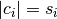
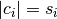
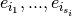
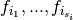
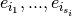
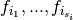
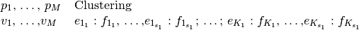

TabSeparatedRunResultFormat¶
-
public class
TabSeparatedRunResultFormatextends RunResultFormat¶ This is the standard result format of ClustEval. It contains a parameter set together with the resulting clustering in each line. Let the parameters and their values be defined as
 and let the clusters be with sizes . Every cluster
and let the clusters be with sizes . Every cluster  contains elements  with fuzzy coefficients . Then the format describing these parameter values and clustering looks as follows:
contains elements  with fuzzy coefficients . Then the format describing these parameter values and clustering looks as follows:
The parameter names and values on the left have to be separated by a TAB from the string “Clustering” and the clustering on the right. If the fuzzy coefficients are missing, the framework will not be able to parse the result file.
Example with two parameters A and B and a clustering of five objects into two clusters:
A,B Clustering 0.1,3 id1:1.0,id4:1.0,id5:1.0;id2:1.0,id3:1.0
Author: Christian Wiwie
Constructors¶
TabSeparatedRunResultFormat¶
TabSeparatedRunResultFormat¶
-
public
TabSeparatedRunResultFormat(TabSeparatedRunResultFormat other)¶ The copy constructor for this format.
Parameters: - other – The object to clone.
Throws: - RegisterException –